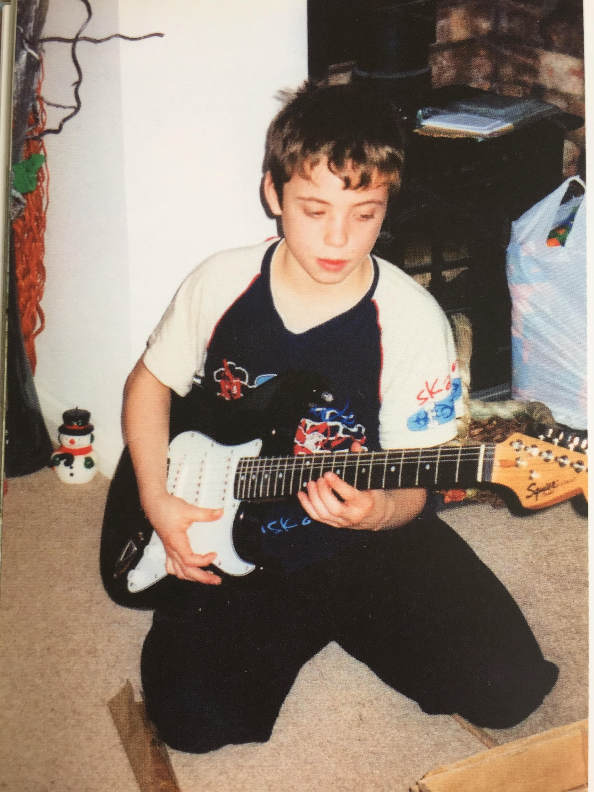
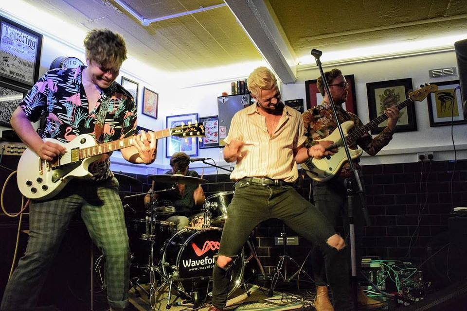
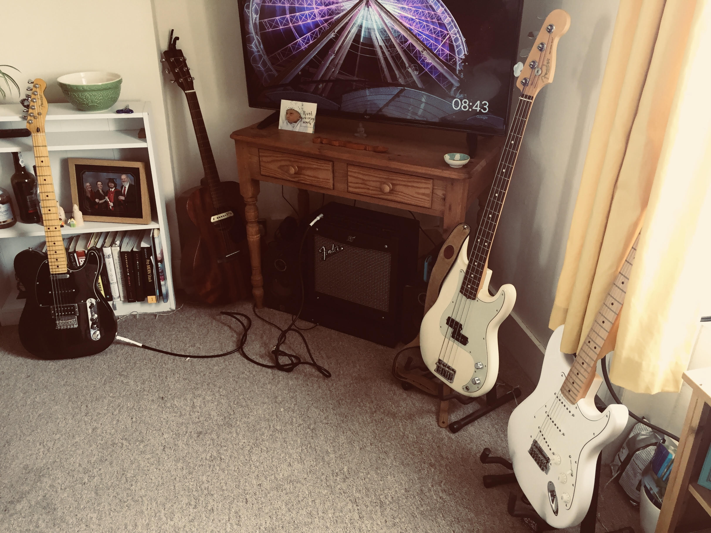

2002-2003 (Age 9-10)
Learning the basics
The first guitar that I learnt to play was a classical guitar. I was influenced heavily by my guitar tutor at the time. I remember one of my first gigs being at an open mic night in Aylesbury, played a duet to the House of the Rising Sun. I remember being very nervous for this gig, but I really enjoyed it. In this time I started to learn different chords and develop my strumming techniques.
2003-2013 (Age 10-20)
Learning Electric and Spanish Guitar
At age ten I got my first electric guitar, a Fender Squier from Cosco! I remember it also came with a 10 watt amp and a wammy bar, this was my first exposure to playing with distortion! On this guitar I developed my lead playing skills with a new tutor who had more of a electric guitar focus. At a later stage I upgraded to a new MG Marshall Guitar Amp. This had great cleans and was my first experience of using reverb. In my late teens I started to learn Spanish Guitar with another tutor which I really enjoyed. This advanced my skills, especially in the finger picking department.
2014-2015 (Age 21-22)
Studio No 1 - Music Sancturary
In my 3rd year at university the house I was staying in gave me the opportunity of building my first studio. Initially this was just for practical reasons (not to annoy my flatmates too much with my music!), but it led into a far bigger project. The studio was right at the back of a long garden, with only tescos behind it, which meant that I could be much louder than I could be in my bedroom! It also gave me the space an time I needed to practice and produce music. Now I call it a studio..... but really it was a an old shed/garage. It was not waterproof or secure, so the first thing I did was put some tarpaulin up to make it waterproof, install laminate flooring (using spare laminate board I found in the shed) and put a lock on the door. I got power from an extension cable from my bedroom - giving me light, heat and internet too - meaning I could play anytime I wanted. The thing I loved about most was that all I needed to do was flick a switch and my music studio was ready - all of my microphones, software and equipment was all ready to go so I could just focus on the production. I tried my different types of microphones, audio hardware and really experimented properly for the first time. You can find some of the recordings I made in my "Personal" music section.

2015-2016 (Age 22-23)
Studio No 2 - The Ultimate One
At the end of university I moved to a house just down the road for a few months with my music friend Matt Blake. Together we build a new and improved studio in a large war bunker/shed in the back of the garden. The acoustics in here were far nicer than Studio No 1 due to its large size. Unfortunately I don't have any pictures of the studio, but below is a picture of the guitar pedals I had at the time.

2016-2017 (Age 23-24)
Subtle Culprits
At this point I was ready to join a band. I enjoyed recording and making songs on my own, but I felt that I would enjoy it far more with a whole band involved. I had actually sold off most of my music equipment at this point as I needed the money and I had nowhere to put all of the drums/guitars/amps... so I decided to buy low-end bass guitar and install some very high end Seymour Duncan j-type pickups into it. I also bought the lightweight 10 watt Fender Rumble Amp at this point to play in the band with, as I thought it would be easy to transport. I opted to play the bass guitar as I liked playing lead and that was definately. The people in this band were really nice and they loved playing music for the sake of playing music. I was definately the young boy of the group, and I had a lot to learn. I loved it! There is something about playing in a full band that is so dynamic and big sounding that is amazing. I played my first band gigs with Subtle Culprits, which was very good experience as it is very different playing live. The part I enjoyed the most was the album recording at a proper studio, this was amazing and it was interesting to see how all of the production worked after dabbling in this for a few years. You can listen to the songs we made in this album here.

2018-2019 (Age 25-26)
Lower Loveday
Lower Loveday are my biggest venture thus far. This band was already relatively well established before I joined, they had their own songs and recordings. This band was a big step up for me in terms of performing live. The biggest crowd I played to was at the Birmingham 02 area in front of around 300 people for a regional competition. I remember buzzing with adrenaline before and after the gig, it was a great feeling. Unfortunately I did not get the opportunity to do any recordings with the boys, but I did do a video shoot (but this was never finished or released). It was great fun this band but it was a lot of commitment in terms of travel and admin. Towards the end I felt it was time to take a break and perhaps go down the production avenue again.
2018-2019 (Age 26)
Recent other flurries of music
My girlfriend and I have been playing around with new guitars and taking them to a nearby studio for a play. She actually has the same number of guitars as I do at the moment and loves upgrading and playing around with them. She watches ALOT of guitar YouTube videos ... but this is nice, it is starting to get me but into music again.
